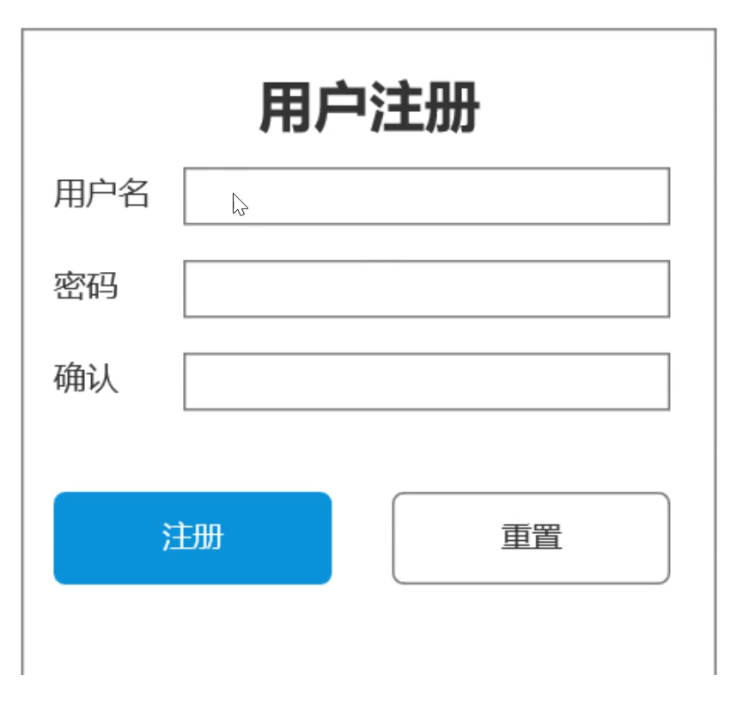

Koa2搭建API服务
Koa2入门
https://www.bilibili.com/video/BV18h411H7GE?spm_id_from=333.999.0.0
Node+Koa2搭建API服务
教程来源：https://www.bilibili.com/video/BV13A411w79h?spm_id_from=333.999.0.0
初始化
npm init -ygit init，并新建.gitignore，添加node_modules- 提交版本后，并通过
git log查看记录
- 提交版本后，并通过
- 新建
README.md文档
项目初始化
npm i koa根目录新建
src/main.js1
2
3
4
5
6
7
8
9
10
11const Koa = require('koa') // 导入Koa，由于导出的是类，一般大写
const app = new Koa() // 实例化
app.use((ctx, next) => { // 中间件
ctx.body = 'hello world' // 测试代码
})
app.listen(3000, () => { // 开启服务
console.log('server is running on http://localhost:3000 !');
})启动开发服务：
node .\src\main.js:node方式启动，是常驻内存，不是热加载的
开发优化
自动重启服务
npm i nodemon配置
dev脚本：如果nodemon装在了全局，则不需要加npxpackage.json1
2
3
4
5
6
7
8
9
10
11
12
13
14
15
16
17
18{
"name": "01",
"version": "1.0.0",
"description": "",
"main": "index.js",
"scripts": {
"test": "echo \"Error: no test specified\" && exit 1",
"dev": "npx nodemon ./src/main.js"
},
"keywords": [],
"author": "",
"license": "ISC",
"dependencies": {
"koa": "^2.13.4",
"nodemon": "^2.0.19"
}
}npm run dev启动1
2
3
4
5
6
7
8
9
10
11PS D:\workspace\github\code\project-workshop\code-prac\koa\01> npm run dev
> 01@1.0.0 dev
> npx nodemon ./src/main.js
[nodemon] 2.0.19
[nodemon] to restart at any time, enter `rs`
[nodemon] watching path(s): *.*
[nodemon] watching extensions: js,mjs,json // 监听这三种文件
[nodemon] starting `node ./src/main.js` // 使用node启动
server is running on http://localhost:3000 ! // 打印输出内容
读取配置文件
安装
dotenv（可以去npm官网上查看介绍）：在根目录中加载.env的配置文件，将键值对加载到process.env的环境变量中npm i dotenv项目根目录，新建
.env配置文件并添加配置.env1
APP_PORT = 8000
读取配置
新建
src/config/config.default.js1
2
3require('dotenv').config() // 导入dotenv，调用config方法，读取配置并写入到`process.env`中
module.export = process.env改写
main.js，使用解构赋值的方式，获取到APP_PORT的配置1
2
3
4
5
6
7
8
9
10
11const Koa = require('koa')
const {APP_PORT} = require('./config/config.default') // 导入process.env环境变量中的APP_PORT字段
const app = new Koa()
app.use((ctx, next) => {
ctx.body = 'hello world'
})
app.listen(APP_PORT, () => {
console.log(`server is running on http://localhost:${APP_PORT} !`); // 使用模板字符串
})启动开发服务
添加路由
所谓的api，就是根据不同url返回不同的数据
目前http://localhost:8000和http://localhost:8000/users返回的内容都是一样的
需要使用路由，来根据不同的url，调用不同的处理函数
安装koa-router
- ``api官网：`router/API.md at master · koajs/router (github.com)
npm install @koa/router
官网案例：
1 | const Koa = require('koa'); |
配置多个路由
1 | const Koa = require('koa') // 导入Koa，由于导出的是类，一般大写 |
但是代码都写在一起肯定不行，需要拆分一下路由
新建src/router文件夹
新建user.routes.js
1 | const Router = require('@koa/router') |
修改main.js
1 | const Koa = require('koa') // 导入Koa，由于导出的是类，一般大写 |
目录结构优化
拆分http服务和业务代码
我们在main.js里面写了太多的功能
拆分
http服务与业务相关代码- 新建
src/app/index.js，专门放业务代码
1
2
3
4
5
6
7
8
9
10
11
12
13
14
15
16const Koa = require('koa') // 导入Koa，由于导出的是类，一般大写
const Router = require('@koa/router') // 导入router
const userRouter = require('../router/user.route')
const app = new Koa() // 实例化
const indexRouter = new Router()
indexRouter.get('/', (ctx, next) => {
ctx.body = 'hello world'
})
app.use(indexRouter.routes())
app.use(userRouter.routes())
module.exports = app修改
man.js1
2
3
4
5
6
7
8
9
10
const {APP_PORT} = require('./config/config.default')
const app = require('./app')
app.listen(APP_PORT, () => { // 开启服务
console.log(`server is running on http://localhost:${APP_PORT} !`);
})- 新建
抽离控制层
将路由router中的处理函数，单独抽离成控制层controller
新建
src/controller文件夹新建
user.controller.js1
2
3
4
5
6
7class UserController{
async register(ctx, next) {
ctx.body = '用户注册成功'
}
}
module.exports = new UserController()修改
router/user.route.js1
2
3
4
5
6
7
8
9const Router = require('@koa/router')
const router = new Router({prefix: '/user'})
const {register} = require('../controller/user.conroller')
// 注册接口
router.post('/register', register)
module.exports = router测试接口
这里我们写成了
post请求，使用postman或者是Apifox（国内的）来测试post请求这里以
apifox为例，下载后，新建项目 > 新建接口按图示配置


配置好路由后，点击运行，可以拿到数据了：

我们再写一个登录的接口
user.router.js1
2
3
4
5
6
7
8
9
10
11
12const Router = require('@koa/router')
const router = new Router({prefix: '/user'})
const {register, login} = require('../controller/user.conroller')
// 注册接口
router.post('/register', register)
// 登录接口
router.post('/login', login)
module.exports = routeruser.controller.js1
2
3
4
5
6
7
8
9
10
11class UserController{
async register(ctx, next) {
ctx.body = '用户注册成功'
}
async login(ctx, next) {
ctx.body = '用户登录成功'
}
}
module.exports = new UserController()
解析body、拆分service层
解析body
完整的注册接口
1 | POST /user/register |
请求参数
1 | user_name, password |
响应
成功：
1 | { |
原型图：
koa需要借助中间件，来解析参数
koa-body：https://www.npmjs.com/package/koa-body1
A full-featured koa body parser middleware. Supports multipart, urlencoded, and json request bodies. Provides the same functionality as Express's bodyParser - multer.
官方基础样例：
1
2
3
4
5
6
7
8
9
10
11const Koa = require('koa');
const koaBody = require('koa-body'); // 1.引入中间件
const app = new Koa();
app.use(koaBody()); // 在所有请求之前，注册这个中间件，就把所有的内容写到了ctx.request.body里面
app.use(ctx => {
ctx.body = `Request Body: ${JSON.stringify(ctx.request.body)}`; // 3.看下request.body
});
app.listen(3000);- 更推荐，相比较于
koa-bodyparser，还支持文件上传
- 更推荐，相比较于
koa-bodyparser
将之前apifox的注册接口完善下，由于是post请求，我们在body里面，设置参数

安装koa-body
1 | npm i koa-body |
补充，将nodemon安装到开发时依赖，先卸载：npm uninstall nodemon，再重新安装到开发依赖：npm i nodemon -D
在app/index.js中添加koa-body相关代码
app/index.js
1 | const Koa = require('koa') |
控制层（处理函数）user.config.js
1 | class UserController{ |
回到apifox中，我们生成下body请求体，发送下注册的请求

后台也打印结果了

控制器里一般做这些事
- 1.获取数据
- 2.操作数据库
- 如果操作数据库的逻辑很复杂，也会单独抽出这一部分（
service层）
- 如果操作数据库的逻辑很复杂，也会单独抽出这一部分（
- 3.返回结果
抽取servcie层
新建src/service目录
新建user.service.js
1 | class UserService { |
修改user.controller.js
1 | const {createUser} = require('../service/user.service') |
后台打印结果：

ORM工具集成
sequelize介绍
ORM：对象关系映射
- 数据表映射（对应）一个类
- 数据表中的数据行（记录）对应一个对象
- 数据表字段对应对象的属性
- 数据表的操作，对应对象的方法
- 就是使用面向对象的方式，来操作数据库
使用sequelize ORM数据库工具：https://github.com/demopark/sequelize-docs-Zh-CN/tree/master
基于
Promise的ORM工具Sequelize 是一个基于
promise的Node.js ORM工具, 目前支持Postgres, MySQL, MariaDB, SQLite 以及 Microsoft SQL Server, Amazon Redshift 和 Snowflake’s Data Cloud. 它具有强大的事务支持, 关联关系, 预读和延迟加载,读取复制等功能.安装
sequelize和mysql2（支持Promise）1
npm i sequelize mysql2
得注意下安装的
sequelize支持的最低版本的mysql，目前默认安装的sequlize版本是6.21.3，对应的mysql版本至少是5.7及以上：https://github.com/demopark/sequelize-docs-Zh-CN/tree/v6
安装数据库
在正式连接之前，我们需要装下mysql数据库，这里暂时安装windows版本，参照：https://blog.csdn.net/jsugs/article/details/124143762

改密码后再用navicat连接，会报错Authentication plugin 'caching_sha2_password' cannot be loaded，参照：https://www.jianshu.com/p/465a444ad846
1 | ALTER USER 'root'@'localhost' IDENTIFIED BY '123123' PASSWORD EXPIRE NEVER; #修改加密规则 |

查询mysql进程，并杀掉
1 | netstat -aon|findstr "3306" |
成功进入后，新建数据库
一开始是没有选中下面两个的，设置名称后直接确定

连接数据库
官方示例：https://github.com/demopark/sequelize-docs-Zh-CN/blob/v6/core-concepts/getting-started.md
1 | const { Sequelize } = require('sequelize'); |
新建src/db/seq.js
该文件中实现数据库的连接，并导出
1 | const {Sequelize} = require('sequelize') |
在db目录下，使用node测试下：

开发环境我们这样搞没事，生产环境可能会用连接池
配置文件
使用dotenv将参数提取成配置文件
修改.env
1 | APP_PORT = 8000 |
seq.js中导入并使用
1 | const { Sequelize } = require('sequelize') |
此时需要在根目录下测试，不然读不到.env文件

测试完将测试代码注释掉
创建User模型
模型创建
新建src/model文件夹
service层通过model层来具体操作数据库
新建user.model.js，使用define方法来创建模型：https://www.sequelize.com.cn/core-concepts/model-basics#%E4%BD%BF%E7%94%A8-sequelizedefine
全局定义表名等于模型名，seq.js：
1 | const { Sequelize } = require('sequelize') |
根据表设计文档，定义模型属性：
用户表
表名：sai_users
| 字段名 | 字段类型 | 说明 |
|---|---|---|
| id | int | 主键，自增（sequelize会自动维护） |
| user_name | varchar(255) | 用户名，unique |
| password | char(64) | 密码 |
| is_admin | tinyint(1) | 0：不是管理员，1：是管理员 |
定义模型属性时的数据类型，参见：https://www.sequelize.com.cn/core-concepts/model-basics#%E6%95%B0%E6%8D%AE%E7%B1%BB%E5%9E%8B
user.model.js
1 | const { DataTypes } = require("sequelize") // 不要相信vscode的自动导入，坑！！ |
有关模型同步：https://www.sequelize.com.cn/core-concepts/model-basics#%E6%A8%A1%E5%9E%8B%E5%90%8C%E6%AD%A5
根目录下，执行node src/model/user.model.js
就是执行了sql语句
1 | PS D:\workspace\github\code\project-workshop\code-prac\koa\01> node .\src\model\user.model.js |
可以看到，数据库中多了一个表：


其中，createAt和updatedAt是sequelize自动给我们维护的，如果不需要时间戳，在define函数中，添加配置项：{timestamps: false}，但是一般情况下，都是保留的
导出User模型，并注释掉sync的代码
1 | const { DataTypes } = require("sequelize") |
添加用户
我们继续完善写入数据库的代码
需要通过ORM实现标准的CRUD：https://www.sequelize.com.cn/core-concepts/model-querying-basics
user.service.js
1 | const User = require('../model/user.model') |
使用apifox发送register接口，成功后查看数据库


成功注册，注意下时区慢8小时
再看下后台打印：
执行的了insert语句
User.create返回的是一个sai_user的表模型对象，dataValues对应着表里面的一条记录
1 | Executing (default): INSERT INTO `sai_user` (`id`,`user_name`,`password`,`is_admin`,`createdAt`,`updatedAt`) VALUES (DEFAULT,?,?,?,?,?); |
我们要返回给用户dataValues的结果
对于其他的值，在service层就可以直接过滤掉，直接返回res.dataValues
user.service.js
1 | const User = require('../model/user.model') |
那么controller层拿到返回的数据后，再根据接口文档，构建最终要返回给客户端的数据格式
注册接口：
成功
1 | { |
失败
1 | { |
修改控制层
user.controller.js
1 | const {createUser} = require('../service/user.service') |
再次使用apifox测试下register接口，注意要使用新的样例

整个的流程小结：
用户发送请求，koa服务接受到请求，先导入各种中间件，然后处理路由，根据路由调用处理函数（控制层），处理函数中涉及业务逻辑及数据库操作（服务层），服务层根据模型层，返回给控制层操作数据库的结果，控制层根据该结果封装接口数据，返回给路由，最后koa将路由的结果，作为接口响应发送到服务端
错误处理
重复注册和没有用户名，目前都会返回500，错误类型不够细致

后台是可以看到两次操作的错误提示的

对于不同的错误类型，我们要分别处理
在控制层接受到用户参数时，要进行验证
合法性验证
user.controller.js1
2
3
4
5
6
7
8
9
10
11
12
13
14
15
16
17
18
19
20
21
22
23
24
25
26
27
28
29
30
31
32
33
34
35
36
37
38const {createUser} = require('../service/user.service')
class UserController{
async register(ctx, next) {
const {user_name, password} = ctx.request.body
// 合法性验证
if(!user_name || !password) {
// 记录错误信息，后续可以记录到错误日志中
console.error('用户名或密码为空')
ctx.status = 400
ctx.body = {
code: '10001', // 自定义的，公司一般会有开发规范
message: '用户名或者密码为空',
result: ''
}
return // 合法性验证不通过的话，直接返回
}
// 验证通过后，再去操作数据库
const res = await createUser(user_name, password)
console.log(res)
ctx.body = {
code: 0,
message: '用户注册成功',
result: {
id: res.id,
user_name: res.user_name
}
}
}
async login(ctx, next) {
ctx.body = '用户登录成功'
}
}
module.exports = new UserController()参数只写一个字段，测试一下注册接口：

可以看到后台，打印的错误日志

合理性验证
controller层，需要根据传入的参数，查询数据库user.controller.js1
2
3
4
5
6
7
8
9
10
11
12
13
14
15
16
17
18
19
20
21
22
23
24
25
26
27
28
29
30
31
32
33
34
35
36
37
38
39
40
41
42
43
44
45
46
47
48const {createUser, getUserInfo} = require('../service/user.service')
class UserController{
async register(ctx, next) {
const {user_name, password} = ctx.request.body
if(!user_name || !password) {
console.error('用户名或密码为空')
ctx.status = 400
ctx.body = {
code: '10001',
message: '用户名或者密码为空',
result: ''
}
return
}
// 合理性验证
// 需要再次查询数据库 getUserInfo
if(getUserInfo({user_name})) { // 根据用户名来查询，参数使用对象，这样可以让查询参数不受顺序影响
ctx.status = 409 // 状态完成冲突，不熟悉的话，可以去MDN上看下常见状态码
ctx.body = {
code: '10002',
message: '用户名已经存在',
result: ''
}
return
}
const res = await createUser(user_name, password)
console.log(res)
ctx.body = {
code: 0,
message: '用户注册成功',
result: {
id: res.id,
user_name: res.user_name
}
}
}
async login(ctx, next) {
ctx.body = '用户登录成功'
}
}
module.exports = new UserController()service层中新增getUserInfo方法user.service.js1
2
3
4
5
6
7
8
9
10
11
12
13
14
15
16
17
18
19
20
21
22
23
24
25
26
27const User = require('../model/user.model')
class UserService {
async createUser(user_name, password) {
const res = await User.create({ user_name, password })
return res.dataValues
}
async getUserInfo({id, user_name, password, is_admin}) { // 参数设计成一个对象，因为查询用户，有可能根据id、user_name、password、is_admin字段去查询
// 判断参数是否存在，拿到实参
const whereOpt = {}
id && Object.assign(whereOpt, {id})
user_name && Object.assign(whereOpt, {user_name})
password && Object.assign(whereOpt, {password})
is_admin && Object.assign(whereOpt, {is_admin})
// 调用ORM查询接口：findOne，这是一个异步函数
const res = User.findOne({
attributes: ['id', 'user_name', 'password', 'is_admin'],
where: whereOpt
})
return res ? res.dataValues : null
}
}
module.exports = new UserService()测试下接口返回值
选一个数据库中已经有的用户名进行测试

后代打印的
sql
错误处理函数封装
我们可以把格式的验证，单独封装成一个中间件（处理函数）

 wechat
wechat alipay
alipay